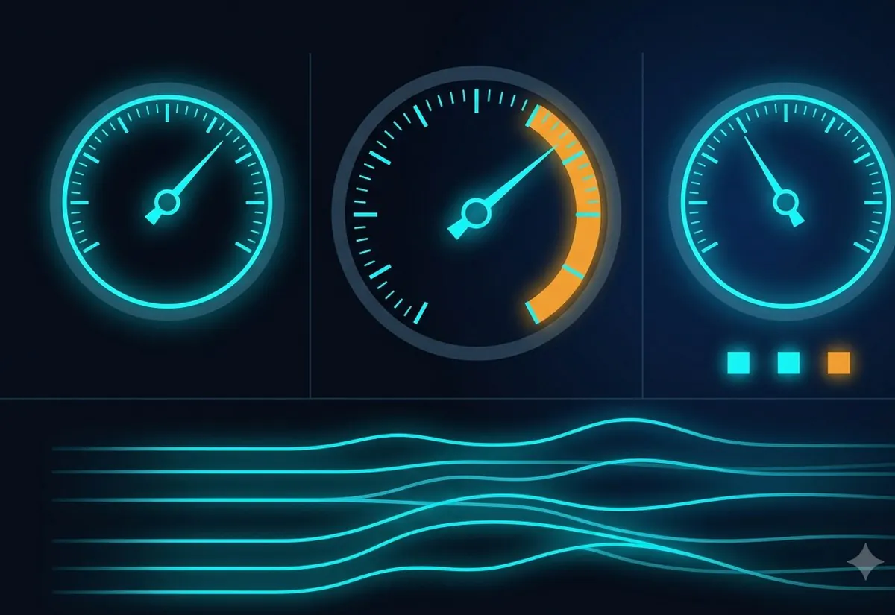
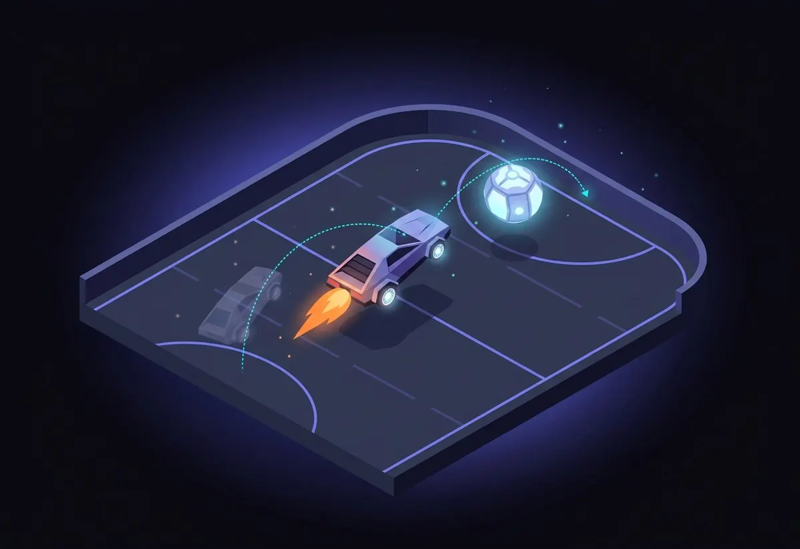

Hello, I am
Marian Garabana Garrido
Data that drives decisions.
MSc Business Analytics and Data Science at IE University. I build AI-driven data work, from agentic pipelines to predictive models, that turns messy data into decisions people can act on.
Latest projects.



Skills that turn data
into decisions.
Languages
- Python
- SQL
- MySQL
Machine learning
- scikit-learn
- XGBoost
- Keras
- statsmodels
- RLGym-PPO
Data
- pandas
- Polars
- GeoPandas
 NumPy
NumPy- Matplotlib
Visualization and BI
- Tableau
 Power BI
Power BI- Streamlit
MLOps and cloud
- MLflow
- FastAPI
- Docker
- AWS
- Git
 GitHub
GitHub- Weights & Biases
Agentic AI
- LangGraph
 Claude
Claude Gemini
Gemini ChatGPT
ChatGPT- Grok
Where I've worked.
I join Accumin Intelligence in September 2026 as a Business Analyst, on a transformation project to digitalise the company and put AI into how it operates. The work is automating processes and building the analysis behind better data-driven decisions.
I research how ventures and emerging technologies will shape the future of insurance, with Vienna Insurance Group. I am building an AI agent pipeline that finds mitigating technologies and estimates their financial impact, feeding a climate risk simulation framework VIG can use to plan ahead. We defended the work to VIG executives in Bilbao, and it doubles as my masters capstone.
I automated recurring reporting workflows and cut manual tax reporting by 80 percent, and reduced manual workload by 50 percent per project. I used SQL, Power Query, and AI-driven tools, and cleaned large datasets to improve accuracy by 20 percent while managing several client projects at once.
I developed the MySQL database, built six Tableau dashboards, and my analysis fed three cost-saving strategies and route-optimisation plans.
What I've studied.
Selected for the Advanced Tech Track, the program for the top 10 to 15 percent of the cohort, and a member of MXT. My work spans machine learning, agentic AI, deep learning, MLOps, and cloud analytics.
- Coursework across Machine Learning I and II, Agentic AI, Deep Learning, MLOps, Reinforcement Learning, Cloud Data Analytics, and Modern Data Architectures.
- Advanced Tech Track: advanced SQL with indexing and partitioning, high-performance processing with Polars, and a project joining databases and AI.
- Built most of the projects on this site here, including the agentic AI systems and the deep learning platform.
- Class Representative and Wellbeing Ambassador, so I stayed close to both my cohort and the faculty.
Graduated with academic distinction and several research and academic awards. I was also a student athlete on the women’s soccer team, which is where I learned to work under pressure and as part of a team.
- Finished Summa Cum Laude with a foundation in analytics, statistics, and business intelligence.
- Led my capstone with DICORSA, a weekly forecast of average order size on more than 600,000 records that came within about 25 percent on average, which is 75 percent on a mean absolute percentage error basis.
- Took third place at an undergraduate research symposium.
- Played on the women’s soccer team as a student athlete while keeping top academic standing.
Generative AI for Data Analysis (Professional Certificate) and the IBM Data Science Professional Specialization. Currently studying for the AWS Cloud Practitioner certification.
- Generative AI for Data Analysis, Professional Certificate.
- IBM Data Science Professional Specialization.
- Business Intelligence Data Analyst career path.
- Data Scientist analytics career path.
- AWS Cloud Practitioner, in progress.
Summa Cum Laude and the Academic Excellence Graduate Award. Third place at an undergraduate research symposium, plus Best Delegate and Outstanding Delegate at Model United Nations.
- Summa Cum Laude.
- Academic Excellence Graduate Award.
- Third place at an undergraduate research symposium.
- Best Delegate and Outstanding Delegate at Model United Nations.
A bit about me.
I was born and raised in Mexico, and I moved to Florida to study Business Analytics at Keiser University. I went there on an athletic scholarship to play for the women's soccer team, which right now is ranked number one in the nation in the NAIA. Competing and carrying a full course load at the same time is where I learned to plan my weeks carefully and to keep my standards up in both.
After finishing my bachelor's I decided to move to Madrid for a master's in Business Analytics and Data Science at IE University, with a concentration in Advanced AI. I chose that program for two reasons: I wanted to make my technical side stronger, and I wanted to reach the job market ready to work rather than still catching up. I set a second goal alongside it, which was to be the healthiest version of myself. That means training for half marathons and getting stronger in the gym, and it keeps me steady when the academic side gets heavy.
These days my work is AI-driven from start to finish. I build agentic pipelines, predictive models, and dashboards, and I care about the parts that make them last: clean data, honest metrics, and results a person can act on. I was a student athlete before this, so I am used to working hard, staying calm under pressure, and pulling my weight on a team.
Open to 2026 roles · Madrid
Let's build something
with your data.
Have a project, a role, or just want to talk data? I'd love to hear from you.